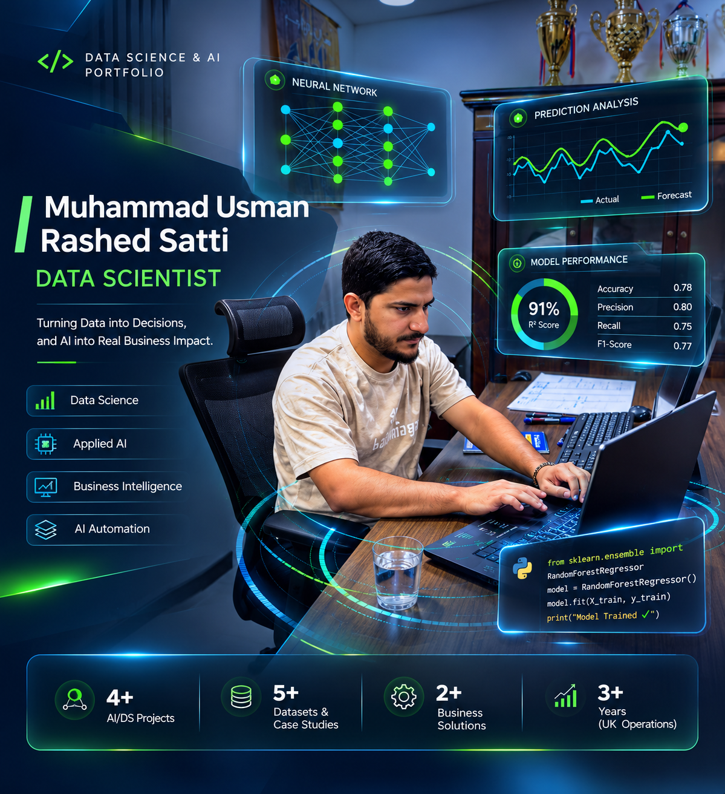

01 / INTELLIGENCE
Applied AI & LLMs
Document understanding, local LLM workflows, information extraction and AI-assisted business processes.
I'm Muhammad Usman Rashed Satti — combining data science, machine learning and engineering thinking to create practical intelligence for real-world operations.

I believe the best AI systems don't just look impressive. They solve problems people actually face.
My background bridges Electrical Engineering, an MSc in Data Science with Advanced Research from the University of Hertfordshire, and practical experience in analytics and operational reporting. I build prototypes that connect data, intelligent models and business workflows.
My interests include document intelligence, resource optimization, forecasting and AI-powered decision support.
From messy raw data to clear decisions and practical AI-powered tools.
Document understanding, local LLM workflows, information extraction and AI-assisted business processes.
Regression, classification, clustering, time-series experiments and thoughtful model evaluation.
Operational reporting, interactive dashboards, KPI design and decision-focused data storytelling.
Relational databases, data pipelines, backend APIs and the foundations of reliable operational applications.
Selected academic work and practical prototypes. No confidential company data is displayed.
Local document intelligence prototype that reads RFQs, extracts key information, supports source-aware search and helps structure preliminary cost estimates.
SAP-inspired resource booking prototype with capacity checks, conflict detection and ML-assisted suggestions. Not an SAP integration.
Exploratory player analytics, KMeans and DBSCAN clustering, and regression-based performance analysis.
Experiments with time-series modelling, classical forecasting methods and recurrent neural networks.
A combination of engineering education, analytical work and practical problem-solving.
Operational analytics, reporting, Power BI dashboards and SQL/Python-supported analysis.
Coordinated event operations, schedules and post-event reporting.
Applied machine learning, research, statistics and predictive modelling.
Engineering fundamentals and quantitative problem-solving.
Technologies used across projects, research and analytics workflows.
Python · SQL · Pandas · NumPy · PySpark
scikit-learn · XGBoost · LightGBM · Ollama
Streamlit · FastAPI · Power BI · Matplotlib
Git · GitHub · SQLite · Jupyter
I'm interested in meaningful work across applied AI, data science, business intelligence and analytics. Let's start a conversation.